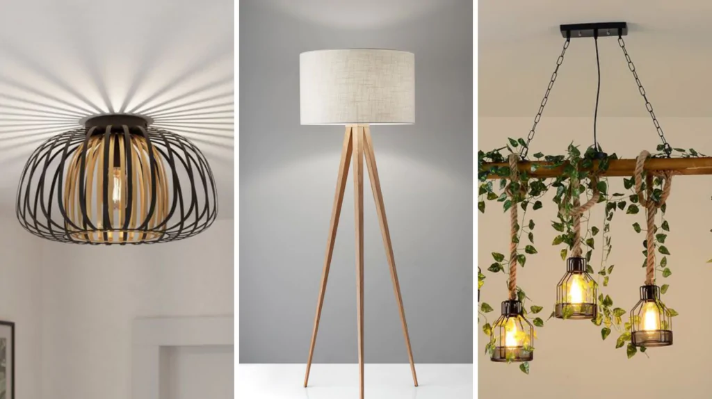
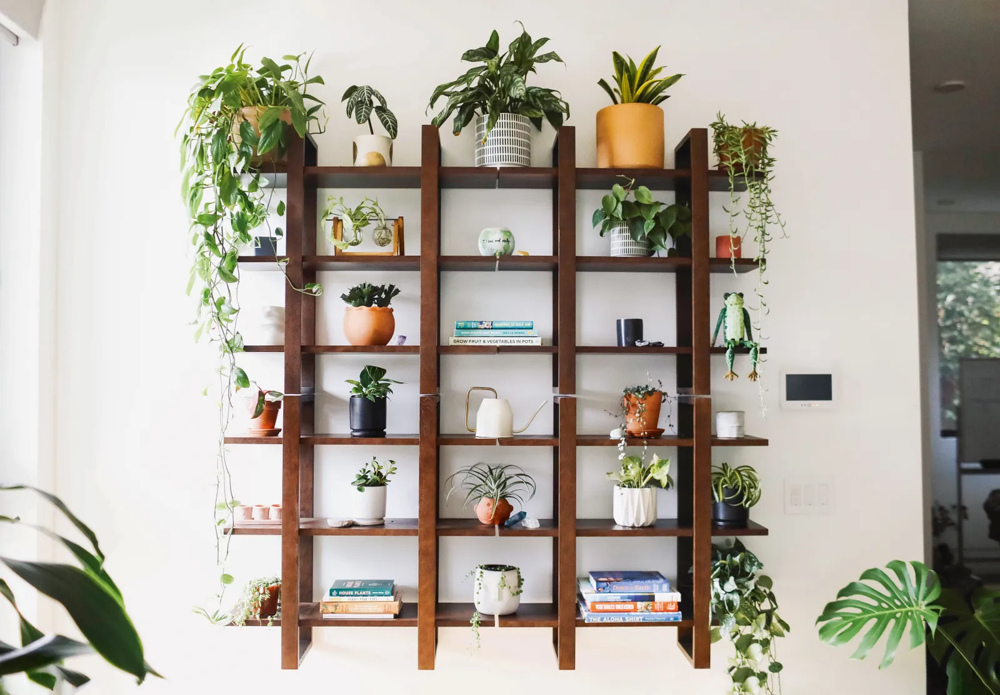
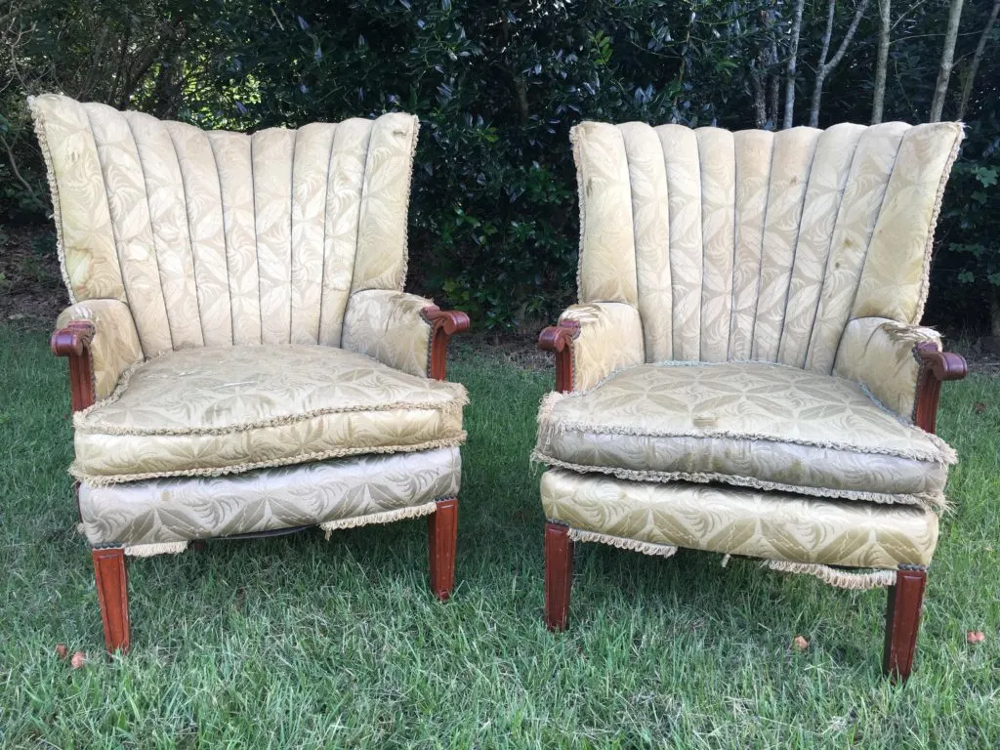

Why DIY Projects?
DIY projects allow you to customize your home and garden while saving money. With a little creativity and effort,
you can repurpose everyday items, create unique decor, and tackle functional projects to improve your space.
Plus, it's a fun way to express your personality and learn new skills!
Popular DIY Ideas

1. Wall Art with Recycled Materials
Creating wall art from recycled materials is a fantastic way to express your creativity while also being environmentally
conscious. This project allows you to transform items that might otherwise end up in the landfill—such as old cardboard,
fabric scraps, or even bottle caps—into stunning pieces that enhance your home’s decor. Not only is this approach
cost-effective, but it also adds a unique, personal touch to your living space.
Materials Needed
To get started, gather your materials. Look for old cardboard boxes, leftover fabric scraps from previous projects, or
even discarded bottle caps. You can also use other recyclable items like paper plates, magazines, or plastic containers.
The beauty of this project lies in its versatility; you can mix and match different materials to create a one-of-a-kind
piece of art.
Design and Creation
Once you have your materials ready, think about the design you want to create. Consider using geometric patterns or
abstract shapes that can easily be formed with cardboard or fabric. You can sketch your ideas on paper first or directly
on the materials to visualize how they will come together.
For a more dynamic look, experiment with color by painting your cardboard pieces or fabric scraps in shades that
complement your existing decor. Acrylic paints work well for this purpose and can add vibrancy and depth to your
artwork. If you prefer a more textured appearance, consider layering different materials—such as gluing fabric onto
cardboard—to create dimension.
Assembly
Once your pieces are ready, it’s time to assemble them into a cohesive work of art. Use glue or a hot glue gun to attach
the various elements together. If you’re working with heavier items like bottle caps, ensure they are securely fastened
to avoid any mishaps later on.
Finishing Touches
After assembling your artwork, think about how you want to display it. You can frame your piece for a polished look or
simply hang it directly on the wall using adhesive strips or nails. If you’re feeling particularly adventurous, consider
creating a gallery wall by combining several pieces of recycled art in different sizes and shapes for an eclectic yet
harmonious display.
Benefits of This Project
This DIY wall art project is not only enjoyable but also serves as a meaningful way to reduce waste while beautifying
your home. It’s perfect for a weekend activity, allowing you to engage in a creative process that results in something
truly special and reflective of your personality. Plus, involving family or friends can make it an even more enjoyable
experience as you collaborate and share ideas. By embracing the use of recycled materials, you contribute positively to
the environment while adding character and charm to your living space.

2. Creative Garden Planters
Repurposing old buckets, tin cans, or wooden boxes into creative garden planters is a delightful way to breathe new life
into discarded items while adding unique character to your garden or balcony. This DIY project not only enhances your
outdoor space but also promotes sustainability by reducing waste. With just a bit of creativity and some basic
materials, you can transform ordinary objects into charming planters that showcase your favorite herbs, flowers, or
vegetables.
Materials Needed
To get started, gather your materials. Look for old buckets, tin cans, wooden boxes, or even plastic containers that are
no longer in use. Make sure to clean them thoroughly to remove any residue or dirt. If you’re using tin cans, be sure to
punch a few drainage holes in the bottom to prevent water from accumulating and harming your plants.
Design and Decoration
Once you have your containers ready, it’s time to think about how you want to decorate them. A fresh coat of colorful
paint can instantly transform a dull container into a vibrant planter. Choose colors that complement your outdoor decor
or reflect your personal style. For a rustic look, consider leaving wooden boxes unpainted or applying a stain to
enhance their natural beauty.
You can also get creative with patterns by using painter’s tape to create stripes or geometric designs. If you prefer a
more whimsical touch, try using stencils to paint flowers, butterflies, or other fun motifs on your planters. For an
added layer of texture and interest, consider attaching embellishments like twine, burlap, or decorative stones around
the edges.
Planting Your Garden
After decorating your planters, it’s time to fill them with soil and select the plants you want to grow. Choose herbs
like basil, rosemary, and mint for a functional garden that adds flavor to your cooking. Alternatively, opt for colorful
flowers such as petunias or marigolds to brighten up your space. If you have enough room in larger containers, consider
planting small vegetables like cherry tomatoes or peppers for a mini vegetable garden right at home.
When planting, ensure that each container has adequate drainage and is filled with high-quality potting soil suitable
for the types of plants you’ve chosen. Arrange the plants according to their sunlight needs—placing sun-loving varieties
in brighter spots and shade-tolerant plants in more sheltered areas.
Displaying Your Planters
Once planted, think about how you want to display your creative garden planters. You can group several containers
together on a balcony or patio for an eye-catching arrangement or line them along walkways for added charm. Hanging tin
cans can also make for delightful vertical gardens if space is limited; simply attach them to a fence or wall using
sturdy hooks.
Benefits of This Project
This project is not only an enjoyable way to express your creativity but also serves as a fantastic opportunity to
engage with nature and cultivate your gardening skills. By repurposing everyday items into functional planters, you
contribute positively to the environment while creating a personalized outdoor space that reflects your style. Whether
you have a sprawling garden or a small balcony, these creative garden planters will undoubtedly add character and charm,
making your outdoor area feel more inviting and vibrant. Plus, watching your plants grow will bring a sense of
accomplishment and joy as you nurture them from seedling to harvest!

3. Customized Lighting Fixtures
Creating customized lighting fixtures is a wonderful way to infuse your living spaces with warmth and ambiance while
showcasing your personal style. By using simple materials such as mason jars, fairy lights, or paper lanterns, you can
craft charming and unique lighting solutions that enhance the atmosphere of any room. These DIY projects are not only
easy to make but also allow for endless experimentation with shapes, colors, and designs to suit your taste.
Materials Needed
To get started, gather your materials. Mason jars are a versatile choice for creating beautiful light fixtures; they can
be used as pendant lights, table lamps, or even outdoor lanterns. You’ll also need fairy lights, which come in various
lengths and styles, perfect for adding a magical touch to your creations. If you prefer a more colorful option, consider
using paper lanterns that can be easily customized with paint or decorative paper.
Design Ideas
Once you have your materials ready, think about the design you want to create. For mason jar fixtures, you can transform
them into hanging pendant lights by attaching them to a light socket kit. Simply drill a hole in the lid of the jar for
the light fixture to pass through, then secure it in place. You can also fill the jars with fairy lights for a glowing
effect—just ensure that the lights are battery-operated or use LED bulbs for safety.
If you opt for paper lanterns, let your creativity shine by experimenting with different colors and patterns. You can
paint them in vibrant hues or use decorative paper to create intricate designs. Consider cutting out shapes or patterns
that will allow light to filter through beautifully when illuminated. Once your lanterns are ready, hang them from
ceilings or place them on tables to create a cozy atmosphere.
Creating Ambiance
Custom lighting fixtures can significantly enhance the ambiance of your living spaces. To achieve a warm and inviting
glow, consider using warm white fairy lights or soft-colored bulbs. Arrange your fixtures strategically throughout the
room—overhead lighting can provide general illumination while table lamps or wall sconces add softer accents in reading
nooks or cozy corners.
For outdoor spaces, mason jar lanterns filled with fairy lights can create a magical atmosphere for evening gatherings.
Hang them from trees or line pathways to guide guests with enchanting illumination. You can also use larger jars as
centerpieces on outdoor dining tables for an inviting touch during al fresco meals.
Personalization and Experimentation
One of the best aspects of creating customized lighting fixtures is the opportunity for personalization. Don’t hesitate
to experiment with different shapes and sizes; mix and match various types of jars or lanterns to create an eclectic
look that reflects your personality. You might even consider incorporating seasonal themes—such as using autumn leaves
in jars during fall or colorful flowers in summer—to keep your decor fresh and engaging throughout the year.
Benefits of This Project
This DIY project not only allows you to enhance your home’s decor but also provides an enjoyable creative outlet. By
crafting customized lighting fixtures, you can transform ordinary materials into extraordinary pieces that bring
character and charm to your living spaces. Additionally, these projects are budget-friendly alternatives to store-bought
lighting options, making them accessible for anyone looking to elevate their home’s ambiance without breaking the bank.
Whether you’re illuminating a cozy reading corner or setting the mood for an outdoor gathering, these charming lighting
fixtures will undoubtedly add warmth and personality to your environment.

4. Floating Shelves
Floating shelves are an excellent way to enhance your home’s decor while providing a modern, space-saving storage
solution. These stylish shelves not only maximize vertical space but also create a clean and uncluttered look, making
them perfect for displaying books, plants, decorative items, or even personal mementos. By building your own floating
shelves using wooden planks and brackets, you can customize their size and finish to perfectly match your decor and
personal style.
Materials Needed
To get started on your floating shelves, gather the necessary materials. You will need wooden planks for the shelves
themselves; choose a type of wood that complements your existing furniture—common options include pine, oak, or plywood.
Additionally, you’ll need brackets to support the shelves. There are various styles available, from simple metal
brackets to more decorative options that can enhance the overall aesthetic.
You will also need screws, a drill, a level, and sandpaper to ensure a smooth finish on your shelves. If you wish to
paint or stain your shelves, gather the appropriate supplies for that as well.
Building Your Shelves
Measure and Cut: Begin by determining where you want to install your floating shelves. Measure the desired length and
height, and mark these points on the wall. Cut your wooden planks to the appropriate size based on your measurements.
Prepare the Wood: Sand the edges and surfaces of the wooden planks to remove any rough spots or splinters. If you plan
to paint or stain the wood, now is the time to apply your chosen finish. Allow it to dry completely before proceeding.
Install Brackets: Using a level, mark where you will install the brackets on the wall. Ensure they are evenly spaced and
aligned for a professional look. Drill holes into the wall at these points and secure the brackets with screws.
Attach Shelves: Once the brackets are securely in place, carefully position your wooden planks onto them. If your
brackets have a lip or support system that holds the shelf in place, ensure they fit snugly.
Customization Options
One of the greatest advantages of building your own floating shelves is the ability to customize them according to your
preferences. Consider varying the size of each shelf for an eclectic look or creating a symmetrical arrangement for a
more polished appearance. You can also experiment with different finishes—whether you prefer a natural wood look, a bold
color, or a sleek matte finish—to ensure they harmonize with your existing decor.
Displaying Your Items
Once your floating shelves are installed, it’s time to style them! Use them to display an array of items such as:
Books: Arrange books both vertically and horizontally for visual interest.
Plants: Incorporate greenery by adding small potted plants or succulents that bring life into your space.
Decorative Items: Showcase decorative pieces like picture frames, candles, or art objects that reflect your personality.
Personal Mementos: Include sentimental items such as travel souvenirs or family heirlooms for a personal touch.
Benefits of Floating Shelves
Floating shelves are not only functional but also serve as an attractive design element in any room. They help declutter
surfaces by providing additional storage without taking up valuable floor space—ideal for smaller homes or apartments.
Moreover, they can easily be adjusted or rearranged as needed, allowing you to refresh your decor whenever you desire.
By creating customized floating shelves tailored to your needs and style preferences, you can transform any room into a
more organized and visually appealing space. Whether used in living rooms, bedrooms, kitchens, or home offices, these
versatile shelves will undoubtedly enhance both functionality and aesthetics in your home.

5. Reupholster Old Furniture
Reupholstering old furniture is an excellent way to breathe new life into tired chairs or sofas while adding a fresh and
personalized touch to your home decor. This DIY project allows you to transform outdated pieces into stylish focal
points, all while saving money and reducing waste. By choosing new fabric and using a staple gun, you can create
stunning results that reflect your unique style, whether you prefer bold patterns or soothing neutral tones.
Materials Needed
To get started with your reupholstering project, gather the necessary materials:
Old furniture: Chairs, sofas, or ottomans that need a makeover.
Fabric: Choose a durable upholstery fabric that suits your style. Consider bold patterns for a statement piece or
neutral tones for a more classic look.
Staple gun and staples: Essential for securing the new fabric to the furniture frame.
Scissors: For cutting the fabric to size.
Screwdriver: To remove any existing upholstery or components.
Batting (optional): If you want to add extra cushioning or smoothness to the surface.
Measuring tape: To ensure you have enough fabric for your project.
Steps to Reupholster
Prepare the Furniture: Start by removing any existing upholstery from the furniture. Use a screwdriver to take off any
screws or components that may be holding the fabric in place. Carefully pull off old staples with pliers and remove the
old fabric, taking note of how it was attached for reference.
Measure and Cut Fabric: Once the old upholstery is removed, measure the surfaces you’ll be covering. Add a few extra
inches to each side for folding over and securing. Cut your new fabric accordingly.
Add Batting (Optional): If you want to enhance comfort or improve the appearance of your furniture, consider adding a
layer of batting before applying the new fabric. Lay the batting over the surface and trim it to size, ensuring it
covers all areas where you’ll be applying fabric.
Attach New Fabric: Begin by placing your new fabric over the furniture, ensuring it is centered and evenly distributed.
Starting from one side, use your staple gun to secure the fabric to the frame, pulling it taut as you go. Work your way
around the piece, stapling every few inches to keep the fabric in place. Be mindful of corners—fold them neatly for a
polished look.
Finishing Touches: Once all sides are secured, trim any excess fabric and reattach any components that were removed
earlier. If necessary, add decorative elements such as trim or piping along the edges for an added touch of elegance.
Choosing Your Style
When selecting fabric for your reupholstering project, consider your overall decor style and how you want the piece to
fit into your space. Bold patterns can serve as eye-catching statement pieces in a room, while neutral tones can provide
versatility and blend seamlessly with existing decor. Additionally, consider the durability of the fabric; upholstery
fabrics are typically designed to withstand wear and tear, making them ideal for furniture that will see regular use.
Benefits of Reupholstering
Reupholstering old furniture offers numerous benefits beyond aesthetics. It is a cost-effective solution compared to
purchasing new furniture, allowing you to save money while still achieving a fresh look. Moreover, this project promotes
sustainability by reducing waste; instead of discarding old furniture, you give it a second life and contribute
positively to environmental conservation.
By reupholstering old chairs or sofas, you not only enhance your home’s decor but also create pieces that reflect your
personal style and values. This hands-on project can be incredibly rewarding—transforming worn-out furniture into
beautiful, functional items that bring joy and comfort to your living space for years to come. Whether you're updating a
beloved family heirloom or giving thrifted finds a modern twist, reupholstering is an engaging way to express creativity
while being mindful of both budget and sustainability.